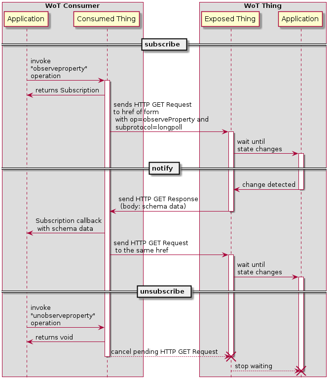
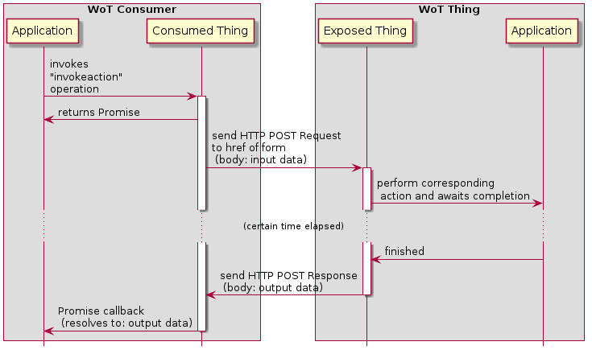
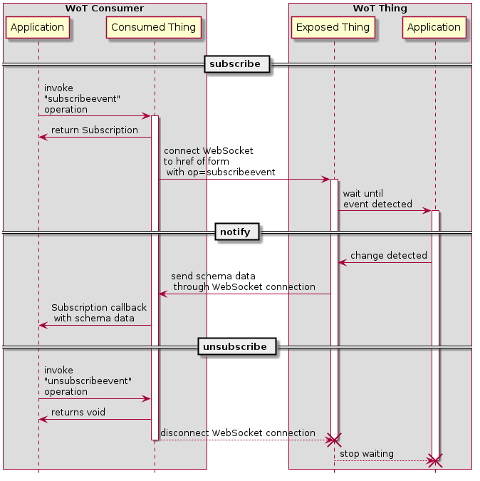

Example Sequences of Interaction Affordances
This section illustrates example sequences of application and protocol transactions that correspond to operations (defined in the Thing Description Specification) implementing various interactions among WoT Consumer and WoT Things. The illustrations show both the concrete protocol transactions and the interactions between the applications running inside the WoT Consumer and WoT Thing and the Consumed Thing and Exposed Thing abstractions.
For the sake of simplicity, remote and local proxies between the Consumer and the Thing are omitted from the following sequences. We also assume HTTP as the concrete protocol and omit any additional transactions for implementing security, such as those that would be used for authentication or to set up a secure connection for HTTPS. Other concrete protocols and the addition of security transactions however would only affect the concrete protocol transactions, not the application-level interactions with the Consumed Thing and Exposed Thing abstractions.
Property Interactions
Read property (HTTP binding)
The following sequence illustrates application and network
transactions to implement the
readproperty operation
with an HTTP protocol binding.

Write property (HTTP binding)
The following sequence illustrates application and network
transactions to implement the
writeproperty operation
with an HTTP protocol binding.

Observe property (HTTP binding with Long Polling subprotocol)
The following sequence illustrates application and network
transactions to implement the
observeproperty operation
with an HTTP protocol binding using
the "longpolling" (Long Polling) subprotocol.

Observe property (HTTP binding with Server Sent Event subprotocol)
The following sequence illustrates application and network
transactions to implement the observeproperty operation
with an HTTP protocol binding using
the "sse" (Server Sent Event) subprotocol.

Observe property (HTTP binding with WebSocket subprotocol)
The following sequence illustrates application and network
transactions to implement the observeproperty operation
with an HTTP protocol binding using
a WebSocket-based subprotocol.

Action Interactions
Invoke action (HTTP binding)
The following sequence illustrates application and network
transactions to implement the
invokeaction operation
with an HTTP protocol binding, where the
operation is synchronous and the response from the server
is delayed until after the action completes.

Event Interactions
In the following, note that there is no explicit operation defined for event notification itself.
The subprotocol used for notification is associated with
the subscribeevent operation, and any necessary concrete
protocol transactions are managed by the Protocol Binding subsystem.
There are also several subprotocols possible for event notification using WebSockets. The interaction diagrams show only one of several possible implementations.
Subscribe, notify and unsubscribe event (HTTP binding with Long Polling subprotocol)
The following sequence illustrates application and network
transactions to implement the
subscribeevent and unsubscribeevent operations
with an HTTP protocol binding using the Long Polling subprotocol.

Subscribe, notify and unsubscribe event (HTTP binding with Server Sent Event subprotocol)
The following sequence illustrates application and network
transactions to implement the
subscribeevent and unsubscribeevent operations
with an HTTP protocol binding using the Server Sent Event subprotocol.

Subscribe, notify and unsubscribe event (HTTP binding with WebSocket subprotocol)
The following sequence illustrates application and network
transactions to implement the subscribeevent and unsubscribeevent operations
with an HTTP protocol binding using a WebSocket subprotocol.
